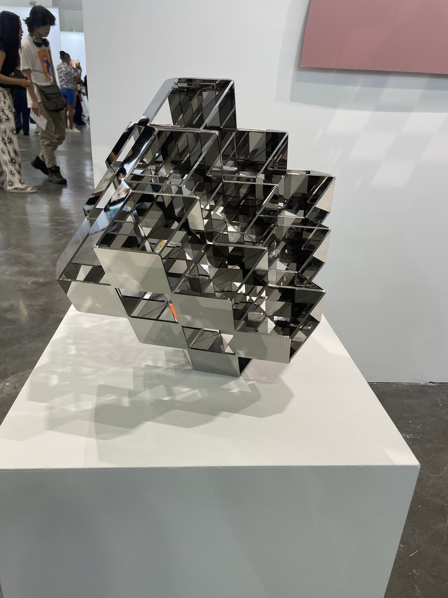
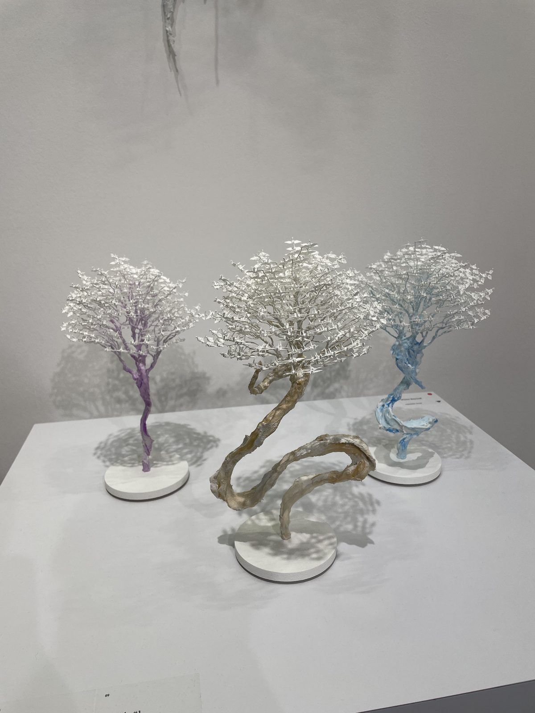
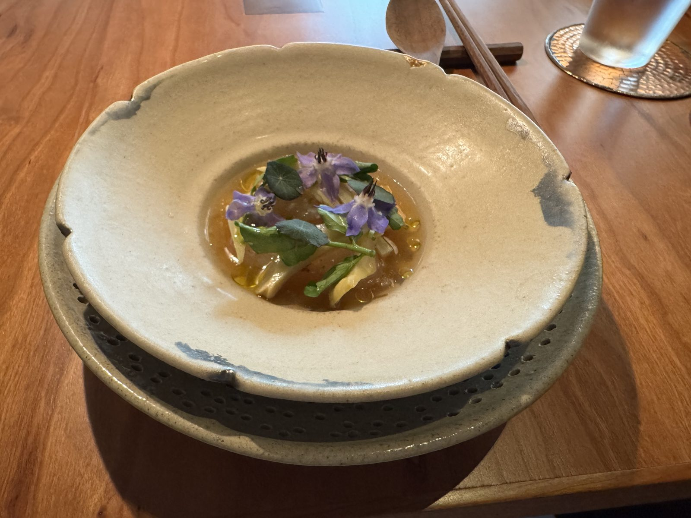
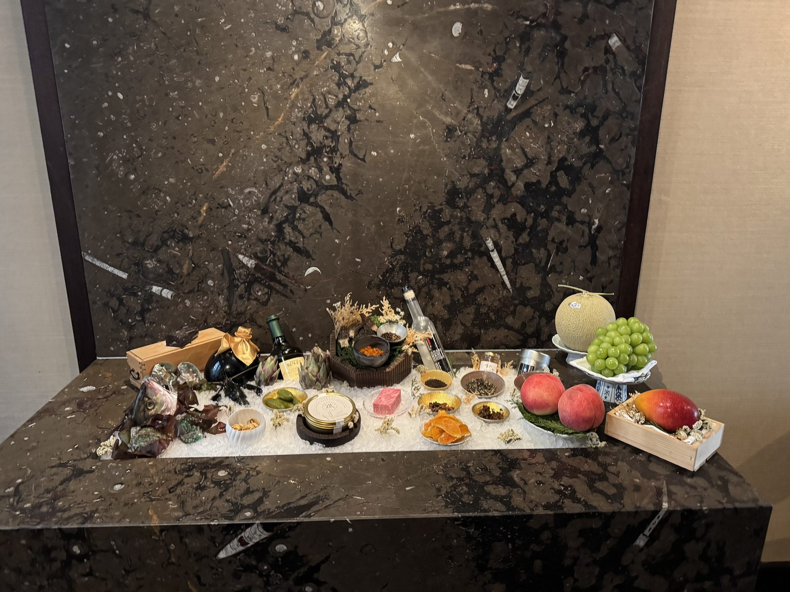
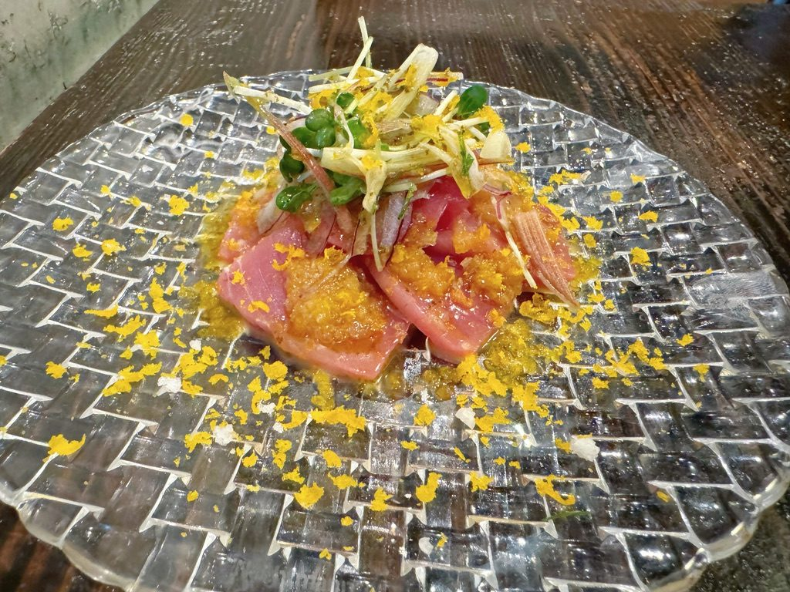
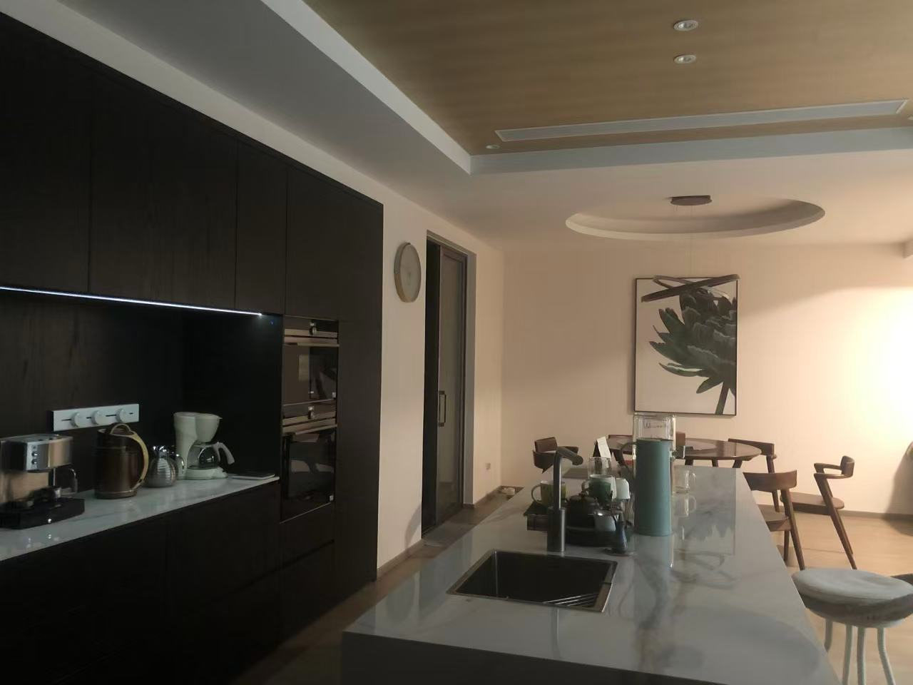
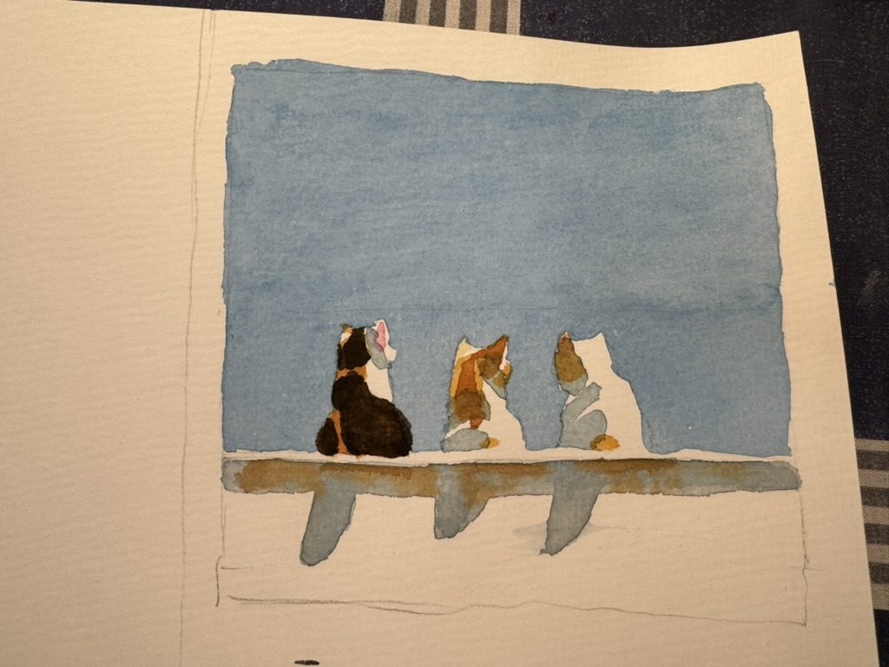
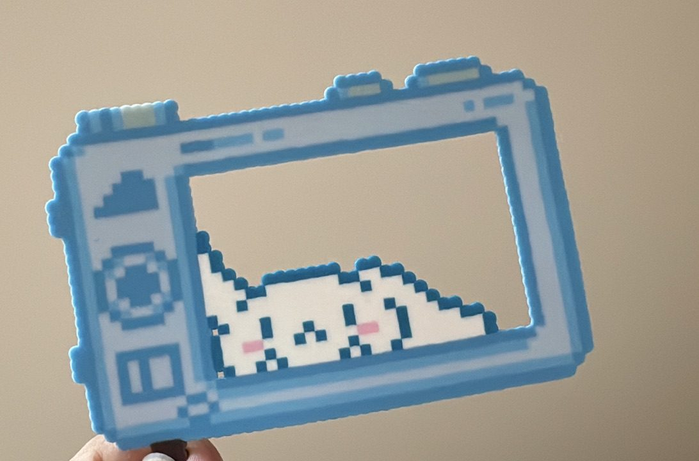

Off the clock
When I am not studying how people look at data, I am training for a race, making music, singing, eating well or making things by hand.
In training
I have trained consistently for more than ten years. Right now I am preparing for a HYROX Singles race: eight 1 km runs, each followed by a functional workout station, done alone from start to finish.
Sound & voice
I make digital music in Ableton Live and Max.
I also sing opera, and spent a year in professional vocal training.
Listening & looking
I love going to concerts, and to museums and galleries.


At the table
Gastronomy is a long-running love. I have eaten at Michelin-starred restaurants that add up to more than 30 stars, most recently Zén in Singapore.



A home
I designed the soft furnishings for my family’s new house: the furniture, lighting, textiles and details, everything you actually see and live with.

Made by hand
I like to make things by hand, mostly rubber stamps, vinyl stickers, sketches, watercolours, bead art and the occasional okonomiyaki. I design in Illustrator and InDesign.



